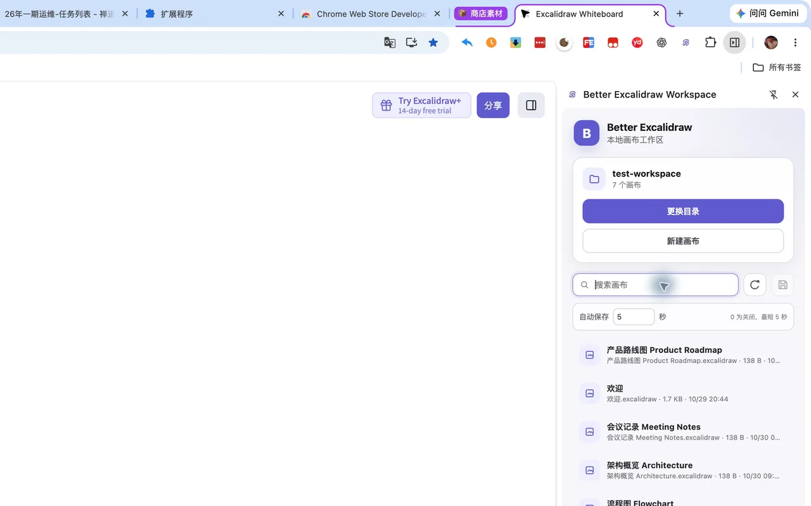
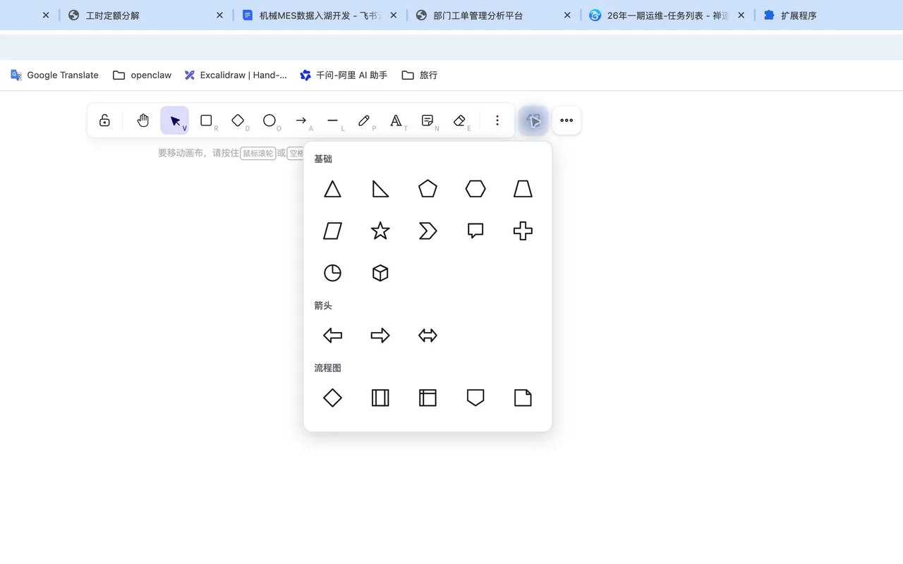
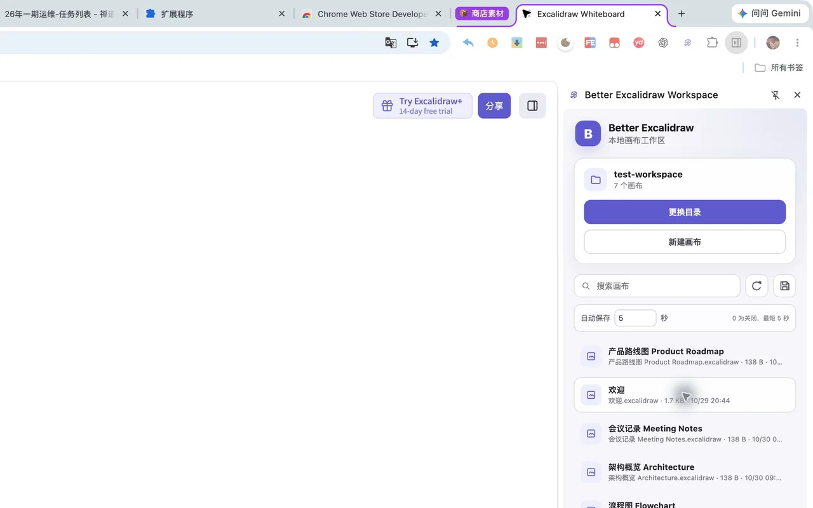

本地项目工作区
选择一个文件夹，递归浏览其中所有 .excalidraw 文件。
v0.7.0 · 免费开源 · 更新于 2026-11-17
打开本地文件夹、切换多个画布、自动保存内容，并绘制更多接近原生体验的图形——全程无需离开 Excalidraw 官方网站。
保留 Excalidraw 的简洁体验，同时增加实用的本地项目管理能力。
选择一个文件夹，递归浏览其中所有 .excalidraw 文件。
切换画布前先保存，也可手动保存或设置适合自己的自动保存间隔。
通过拖拽绘制多边形、星形、流程判断、箭头、气泡等扩展图形。
以下为扩展在 Chrome 侧边栏、官方 excalidraw.com 上运行的真实界面截图。



从 Chrome 应用商店添加，或从源码自行构建。
https://excalidraw.com/。pnpm install。pnpm build 生成 dist/ 目录。chrome://extensions/ 并开启开发者模式。dist/ 目录。清楚说明扩展能访问什么，以及在哪里运行。
sidePanel——在 Chrome 侧边栏中展示本地画布工作区。storage——在本地保存自动保存间隔、最近使用的工作区句柄等设置。https://excalidraw.com/*——内容脚本仅在官方 Excalidraw 网站运行。https://excalidraw.com/ 网站。是的。采用 MIT 许可证，完全免费且开源。你可以在 GitHub 查看代码、提交问题或参与贡献。
不会。画布文件仅通过浏览器授予的目录权限在本地读取和保存。无需账号，也不会上传到开发者服务器。
Google Chrome 116 或更高版本，支持 ChromeOS、macOS、Windows 和 Linux。它是 Manifest V3 扩展。
它仅在官方 excalidraw.com 上增加工作区按钮、扩展图形面板和画布切换功能，无需 Excalidraw 账号或任何云服务。
请在 GitHub Issues 提交问题。
工作区文件始终由你掌控。